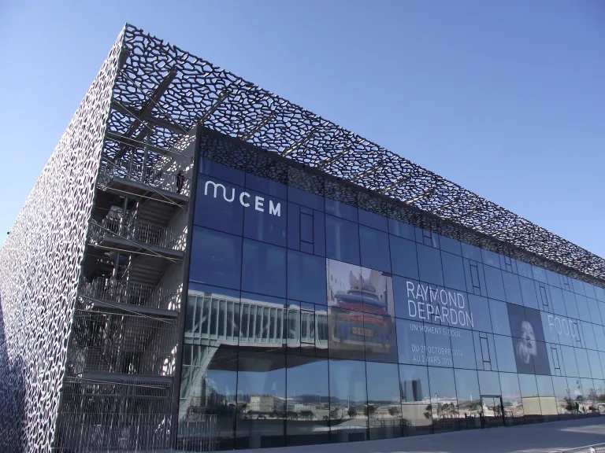
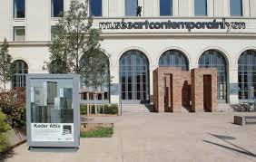
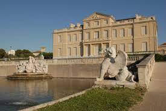
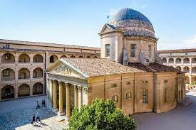
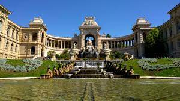
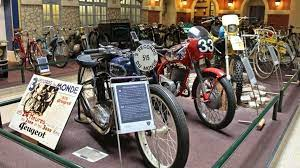
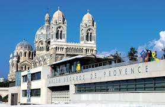
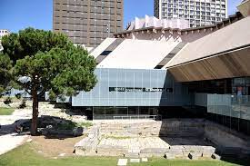
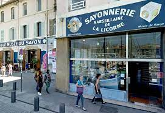
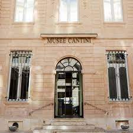

MuCEM (Musée des Civilisations de l'Europe et de la Méditerranée)
Ce site n'est pas seulement l'un des musées les plus importants de la ville de Marseille, c'est aussi l'un des bâtiments les plus représentatifs du vieux port de la ville. LeMuCEM ( Musée des Civilisations de l'Europe et de la Méditerranée) est une institution nationale de plus de 40 000 m² dédiée à la conservation et à l'étude anthropologique des sociétés qui se sont développées sur le continent. C'est certainement l'un des lieux les plus visités de toute la ville et cela est dû à sa facilité d'accès grâce à son iconique passerelle de 115 m de long qui le relie au Fort Saint Jean, une étape obligée lors d'une visite touristique du vieux port. Compléter la visite de ce lieu par une promenade en bateau dans Marseille est également une excellente idée, d'autant plus qu'il est situé dans la zone portuaire d'où partent généralement ces types de bateaux touristiques.
Détails intéressants
Situation : 1 Esp. J4, 13002 Marseille, France. Horaires d'ouverture : Le musée est ouvert tous les jours de la semaine sauf le mardi et les horaires d'ouverture varient selon la période de l'année. En haute saison, de juillet à septembre, il est généralement ouvert de 10h à 20h. Prix : Les billets coûtent environ 10 euros par personne. Musée d'Art Contemporain (MAC)
Ce musée est dédié à l'art contemporain et est l'un des plus intéressants musées consacrés à cette période des arts plastiques dans toute la France
Château de Borély - Musée des Arts décoratifs, de la Faïence et de la Mode
Ce musée présente une collection d'arts décoratifs, de céramiques et de mode, offrant aux visiteurs une immersion dans l'artisanat et le design à travers les époques
La Vieille Charité :
Ce centre historique abrite plusieurs musées et structures multi-culturelles, offrant une plongée fascinante dans l'archéologie méditerranéenne ainsi que dans les arts africains, océaniens et amérindiens
Musée des Beaux-Arts de Marseille :
Offrant une riche collection d'œuvres allant du XVIe au XIXe siècle, ce musée est un incontournable pour les amateurs d'art
Musée de la Moto
Ce musée est dédié à l'histoire et à l'évolution des motos, offrant une expérience immersive dans le monde des deux-roues. Il est situé à 18 Traverse, Trav. Saint-Paul, 13013 Marseille..
Regards de Provence
Ce musée met en valeur l'art, la culture et la musique de Marseille, de Provence et de la région méditerranéenne. Il est situé dans l'ancienne station sanitaire du port de Marseille.
Musée d'histoire de Marseille
Ce musée offre un panorama des écoles italiennes, françaises et du Nord, du XVIe au XIXe siècle, et est apprécié des passionnés d'histoire. Il est situé dans le 1er arrondissement de Marseille.
Musée du Savon de Marseille
Offrant une plongée fascinante dans l'histoire et la fabrication du savon de Marseille, ce musée est une destination intéressante pour les amateurs d'histoire et de culture. Il est situé à Marseille.
Musée Cantini
Dédié à l'art moderne, ce musée est situé rue Grignan à Marseille et couvre la période allant de 1900 à 1960.
